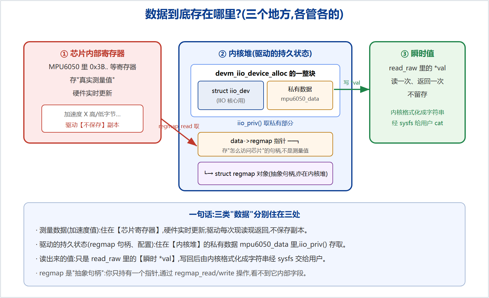

compatible 或名字把"设备"和"驱动"匹配上 → 匹配成功后内核自动调用驱动的 probe() → probe 里完成三件事:① 用 devm_iio_device_alloc 分配 iio_dev + 私有数据;② 用 regmap 建立寄存器访问通道、读 WHO_AM_I 认芯片、唤醒;③ 填好 iio_dev 并 devm_iio_device_register 注册,挂上通道与 read_raw 回调。此后用户 cat 某个通道属性时,IIO 核心回调 read_raw,驱动用 regmap 现读芯片寄存器、把值写回并经 sysfs 返回给用户。
一个标准 i2c + IIO 驱动文件,主体就是下面这几块,顺序基本固定:
| # | 组成部分 | 作用(一句话) |
|---|---|---|
| 1 | 头文件 + 寄存器宏 | 引入 module/i2c/regmap/iio;定义芯片寄存器地址 |
| 2 | struct 私有数据 | 存这台设备自己的状态(regmap 句柄、配置…) |
| 3 | regmap_config | 告诉 regmap 寄存器几位、数据几位 |
| 4 | 通道数组 iio_chan_spec[] | 声明"能测什么量",决定生成哪些 sysfs 属性 |
| 5 | read_raw 回调 | 用户读某通道时,去芯片取数据返回(按 mask 分 RAW/SCALE) |
| 6 | struct iio_info | 回调表,把 read_raw 交给 IIO 核心 |
| 7 | probe() | 分配 → 初始化(regmap/WHO_AM_I/唤醒)→ 注册 IIO |
| 8 | 匹配表 id_table / of_match_table | 声明"我认得哪些设备" |
| 9 | struct i2c_driver + module_i2c_driver | 驱动"名片"并注册到 i2c 总线 |
| 10 | MODULE_* | 许可、作者、描述 |
初学者最容易糊涂的是"传感器的数据到底存在驱动里的哪个变量"。答案是:测量数据根本不存在驱动里。要分三处看(图 1)。

0x3B 起)。由硬件实时更新。驱动不保存副本,每次被读时用 regmap 现读现返回。struct mpu6050_data。它和 iio_dev 由 devm_iio_device_alloc 一整块分配在内核堆;里面存的是 regmap 句柄、配置等"怎么访问芯片"的信息,不是测量值。用 iio_priv() 存取。read_raw 里的瞬时 *val。读一次、写回一次,不留存;内核把它格式化成字符串经 sysfs 交给用户。data->regmap 存的不是数据,是"读数据的通道";真正的数据在芯片里,读出来的值是过路的瞬时值。这也是为什么这个(direct 模式)驱动里没有一个"保存加速度的数组"——不需要,现读即可。(若要连续高速采集,才用"触发缓冲"在内核里开 kfifo,那是进阶内容。)驱动里反复出现三个指针:i2c_client *client、iio_dev *indio_dev、regmap *regmap。搞懂它们各代表什么、从哪来、存在哪,代码就不再是"黑话"。
struct i2c_client *client —— "总线上这颗具体芯片"的把手probe(client, id)。你不分配它。client->addr —— 7 位从设备地址(如 0x68)。client->adapter —— 它挂在哪条 I2C 总线(适配器);实际收发经它。client->dev —— 内嵌的通用 struct device:打日志 dev_info(&client->dev, ...)、申请 devm 资源、取设备树节点都用它。client->irq —— 该设备的中断号(若接了中断)。devm_regmap_init_i2c(client, &cfg) 建 regmap;用 &client->dev 做各种 devm_/日志调用。struct iio_dev *indio_dev —— "一个 IIO 设备"的登记表devm_iio_device_alloc(&client->dev, sizeof(私有数据)) 分配(连同私有数据一整块)。->name —— 设备名(=> /sys/.../name)。->modes —— 工作模式,如 INDIO_DIRECT_MODE(直接读)。->info —— 指向 iio_info 回调表(含 read_raw)。->channels / ->num_channels —— 通道数组与数量(能测什么量)。iio_priv(indio_dev) 取)和设备模型的 struct device。/sys/bus/iio/devices/iio:deviceN。struct regmap *regmap —— 读写寄存器的"抽象句柄"struct regmap 是不透明类型——它的内部字段定义藏在内核内部,你拿到的只是一个指针,不能直接访问它的成员,只能通过函数操作它:
regmap_read(regmap, reg, &val) / regmap_write(regmap, reg, val)regmap_update_bits(regmap, reg, mask, val)(只改某几位)regmap_bulk_read(regmap, reg, buf, n)(连读多个)devm_regmap_init_i2c(client, &mpu6050_regmap_config)。它内部记住了 client(走哪条总线、哪个地址)和 config(reg_bits/val_bits/max_register)。data->regmap,probe 存、read_raw 取。regmap_read,它底层替你发 I2C 事务。iio_priv(indio_dev) 取回 regmap 去读芯片。本文确保与 Linux 5.4 IIO/i2c/regmap 实际语义一致。配套仓库:github.com/fyy0619-cell/xiangmu